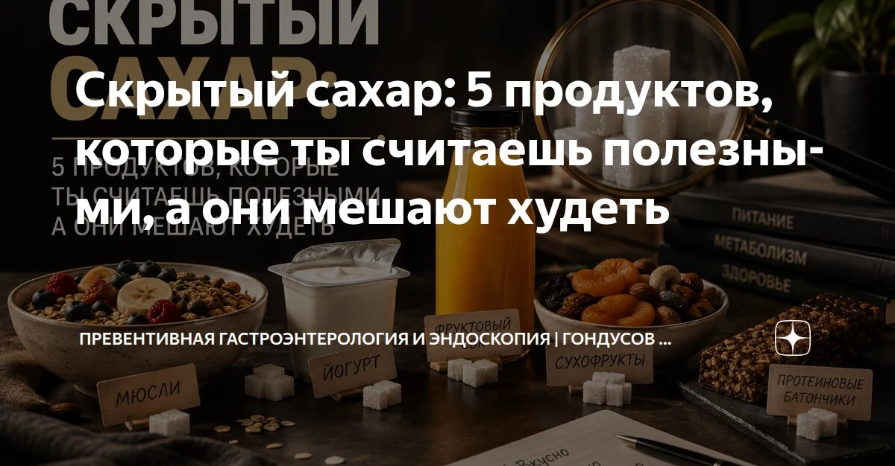

Скрытый сахар: 5 продуктов, которые ты считаешь полезными, а они мешают худеть



Ты убрала конфеты и торты, а вес стоит. Сахар часто прячется в продуктах, которые кажутся полезными: йогуртах, соках, соусах, батончиках и быстрых кашах.
Почему?
Сахар прячется там, где ты его совсем не ждёшь. Он маскируется под «полезное», прячется в продуктах, которые мы спокойно кладём в корзину и считаем правильным выбором. Давай посмотрим на пять таких обманщиков, ведь именно они могут тормозить твоё похудение.
1. Обезжиренные йогурты и творожки
Кажется, что это идеальный завтрак: мало жира, «диетично», да ещё и с ягодками. Но если заглянуть в состав, часто там на первом или втором месте сахар. Иногда его столько, что в одной баночке оказывается больше, чем в небольшом десерте. А сытости от такого йогурта почти нет: жир убрали, сахар добавили и через час ты снова хочешь есть. Получается замкнутый круг: ешь «полезное», а тяга к сладкому только растёт.
2. Соки и смузи
«Фрукты это же хорошо!» - думаешь ты. И это правда, но только если ты ешь их целиком. В соке и смузи нет клетчатки, которая замедляет усвоение сахара. Зато фруктозы хоть отбавляй. Для организма это почти как сладкий напиток: резкий скачок инсулина, а потом такой же резкий спад и снова хочется есть.
3. Соусы: кетчуп, барбекю, готовые заправки для салата
Ты стараешься есть больше овощей, берёшь куриную грудку, делаешь всё «по правилам». А потом поливаешь это ложкой кетчупа или готовой заправкой. И не замечаешь, что в каждой такой ложке может быть чайная ложка сахара, а то и больше. В соусе сахар нужен, чтобы сгладить кислоту и соль, сделать вкус мягким и привычным. Но в итоге ты незаметно добавляешь себе лишние углеводы, которые мешают худеть.
4. «Фитнес» батончики и гранола
Эти продукты будто созданы для тех, кто заботится о себе: яркие упаковки, надписи «источник белка», «с клетчаткой», «для энергии». Но по составу многие из них это те же конфеты, только с орехами и злаками. В них много сахара, а иногда ещё и сиропов, мёда, всё это быстро превращается в глюкозу и не даёт долгой сытости. Гранола выглядит как здоровый завтрак, но на деле это сплошные углеводы.
5. Каши быстрого приготовления
Ты думаешь: «Каша это полезно, это сложные углеводы». Но каши быстрого приготовления совсем другая история. В них зерно уже сильно обработано, а в составе часто есть сахар или сиропы. Это быстрые углеводы: они моментально поднимают уровень глюкозы в крови, а через час ты чувствуешь сильный голод. В итоге получается, что завтрак, который должен был дать энергию на несколько часов, работает как маленькая конфета и тянет за собой перекусы.
Как перестать попадаться на уловки
Главное научиться видеть сахар, а не верить надписям. Вот простые шаги, которые реально помогают:
Читай состав, а не только яркую этикетку. Надпись «без сахара» не всегда означает, что углеводов там мало: могут быть сиропы, фруктоза - всё это тоже сахар.
Выбирай цельные продукты. Цельный фрукт вместо сока, натуральный йогурт без добавок вместо сладкого творожка, обычная каша вместо «быстрого» варианта.
Не пей калории. Напитки и жидкие сладости усваиваются быстрее и почти не дают сытости, поэтому их легко перебрать.
Смотри на первые позиции в составе. Если сахар, сироп или мёд стоят на первых местах значит его в продукте много.
Сахар не запрещён. Совсем убирать его из жизни не обязательно. Но его нужно видеть и понимать, где он прячется и сколько ты его на самом деле съедаешь. Если вес стоит, хотя ты стараешься и отказываешься от очевидных сладостей, начни с этих пяти продуктов.
Ваш доктор Гондусов Д.В. 

Статья носит информационный характер и не заменяет консультацию врача. Не занимайтесь самодиагностикой.